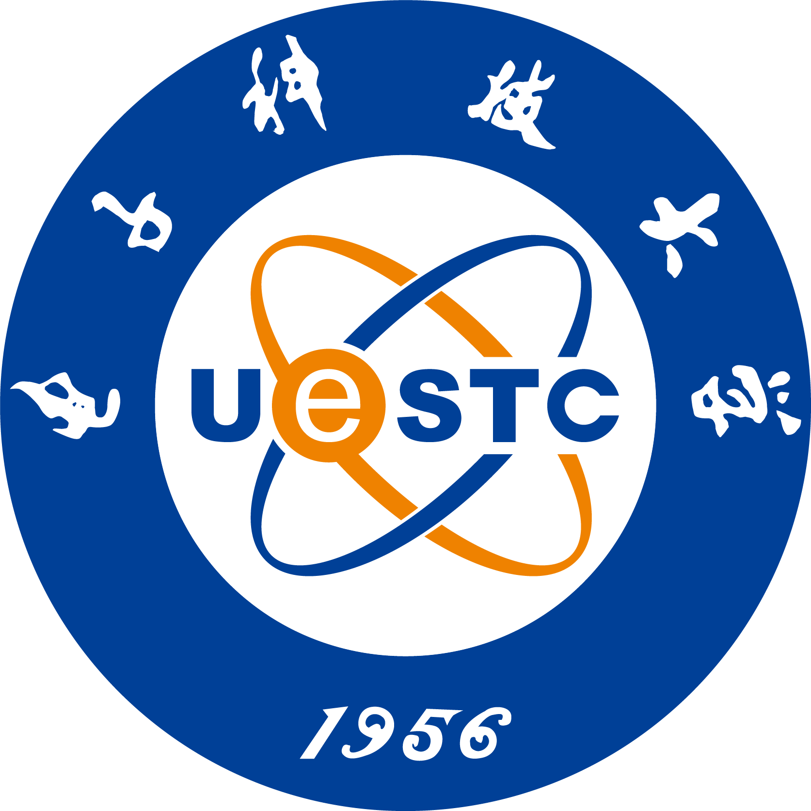
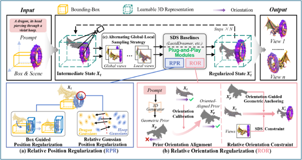
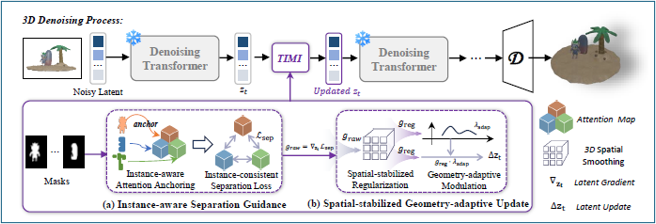
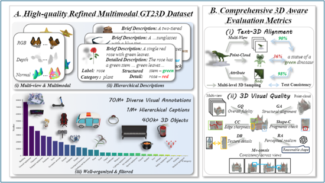
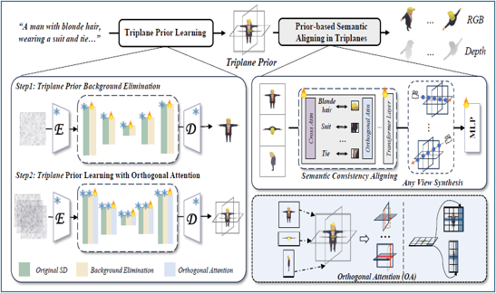
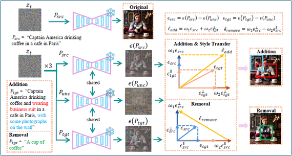

Hi, I am Xiao Cai (Chinese name: 蔡晓). I am currently a third-year student in a five-year direct Ph.D. program at University of Electronic Science and Technology of China (UESTC), advised by Prof. Heng Tao Shen, Prof. Lianli Gao, and Prof. Jingkuan Song.
My research focuses on general 3D content generation, including single-object 3D generation, multi-object 3D scene generation, and data/evaluation analysis for reliable 3D generation systems.
🔥 News
- 2026: One paper, TIMI, was accepted by ICML 2026.
- 2025: One paper, SeMv-3D, was published in IEEE Transactions on Image Processing (TIP).
- 2023.09: Started my Ph.D. study at UESTC.
🎓 Educations
- 2023.09 - Now, Ph.D. Student,

University of Electronic Science and Technology of China, School of Computer Science and Engineering, Computer Science and Technology, Chengdu, China - 2019.09 - 2023.06, Bachelor, University of Electronic Science and Technology of China, School of Computer Science and Engineering, Computer Science and Technology, Chengdu, China
📝 Publications

SpatialGS: Relative Spatial Regularization in Gaussian Splatting for Layout-guided Text-to-3D Generation
Qinhong Du, Xiao Cai, Pengpeng Zeng, Ji Zhang, Jingkuan Song, Lianli Gao
ACM MM Under Review
Keywords: Gaussian Splatting, Layout-guided Generation, Text-to-3D

TIMI: Training-Free Image-to-3D Multi-Instance Generation with Spatial Fidelity
Xiao Cai, Lianli Gao, Pengpeng Zeng, Ji Zhang, Heng Tao Shen, Jingkuan Song
ICML 2026
Keywords: Image-to-3D, Multi-instance Generation, Spatial Fidelity


SeMv-3D: Towards Concurrency of Semantic and Multi-view Consistency in General Text-to-3D Generation
Xiao Cai, Pengpeng Zeng, Lianli Gao, Sitong Su, Heng Tao Shen, Jingkuan Song
IEEE Transactions on Image Processing
Keywords: Text-to-3D, Semantic Consistency, Multi-view Consistency

Towards Generalized and Training-Free Text-Guided Semantic Manipulation
Yu Hong, Xiao Cai, Pengpeng Zeng, Shuai Zhang, Jingkuan Song, Lianli Gao, Heng Tao Shen
arXiv
Keywords: Semantic Manipulation, Text-guided Editing, Training-free
💼 Internships
- To be updated, Research internship information can be added here.
🥇 Honors and Services
Honors
- Samsung Scholarship, university-wide top 10
- Meritorious Winner, Mathematical Contest in Modeling, top 7%
- Outstanding Undergraduate Graduate Award, UESTC
- First-class Scholarship, UESTC
Academic and Institutional Services
- Reviewer, IEEE Transactions on Multimedia (TMM)
- Reviewer, ICCV 2025
- Teaching Assistant, Artificial Intelligence Laboratory Course, UESTC
- Graduate Party Branch Secretary, Future Media Center, UESTC